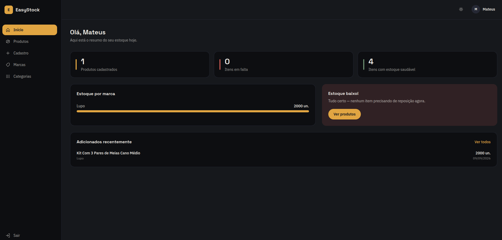
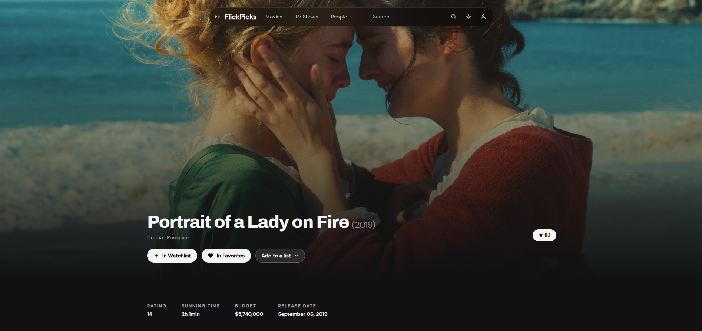

easystock.ts

EasyStock
Reescrita em Angular 22 de um app real de controle de estoque, com login via Firebase e área de demonstração para visitantes testarem.
Front-end · Angular · e-learning · .NET
Desenvolvo interfaces em Angular e crio conteúdo de e-learning pro SENAI-SP — do storyboard em SCORM ao componente na tela. Gosto de projetos que resolvem um problema de verdade, não só de mostrar código bonito.
Trabalho no SENAI-SP entre diagramação editorial, revisão técnica de material didático e desenvolvimento de e-learning — o que me deixou com um pé na parte visual e outro no código. Fora do trabalho, sigo construindo os mesmos tipos de ferramenta por conta própria, quase sempre em Angular.
Prefiro reescrever um projeto antigo até ele ficar redondo a começar dez projetos novos pela metade. Se um app resolveu um problema real uma vez, vale a pena deixá-lo bem feito.
Uma seleção do que ando construindo — de reescritas de projetos reais a experimentos pessoais.

Reescrita em Angular 22 de um app real de controle de estoque, com login via Firebase e área de demonstração para visitantes testarem.

Ferramenta para montar storyboards de cursos do SENAI, substituindo o processo manual em Word por uma estrutura de dados organizada com drag-and-drop.

FlickPicks é um app de descoberta de filmes/séries feito com Angular 22 (standalone components, signals, change detection zoneless) e Tailwind CSS 4, consumindo a API da TMDB direto pelo cliente.